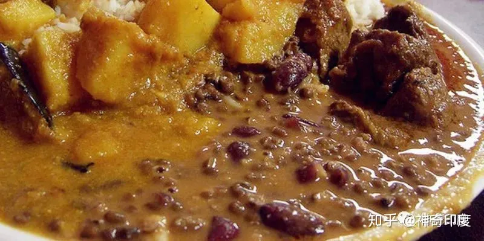
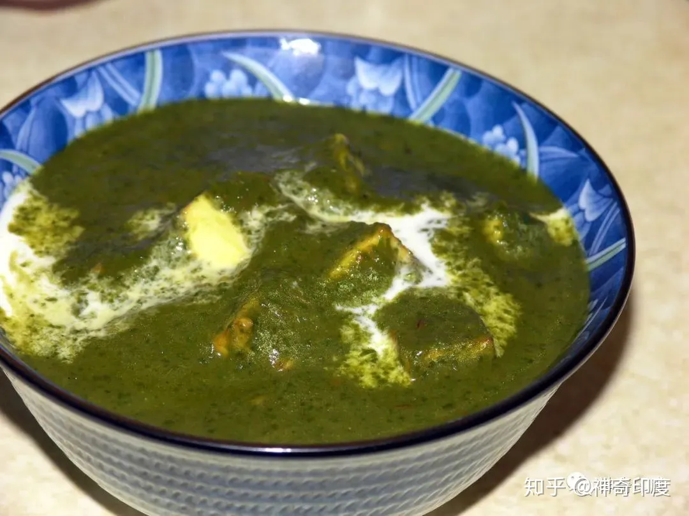
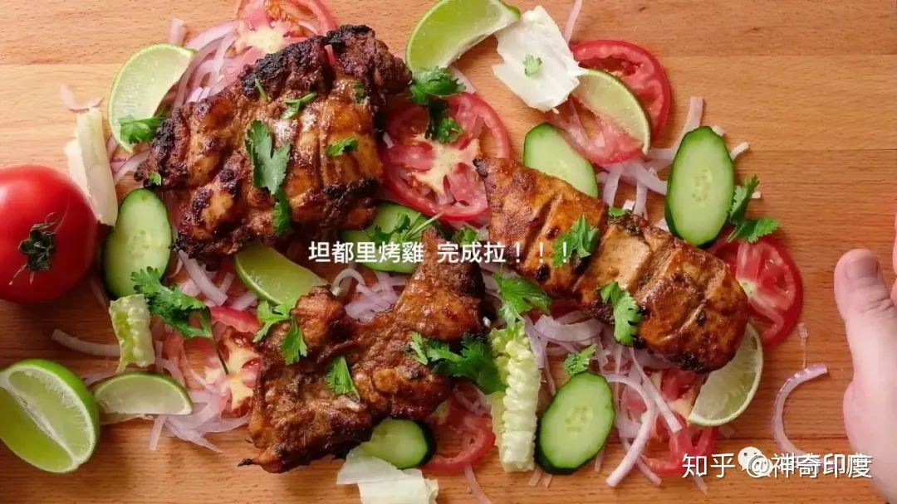
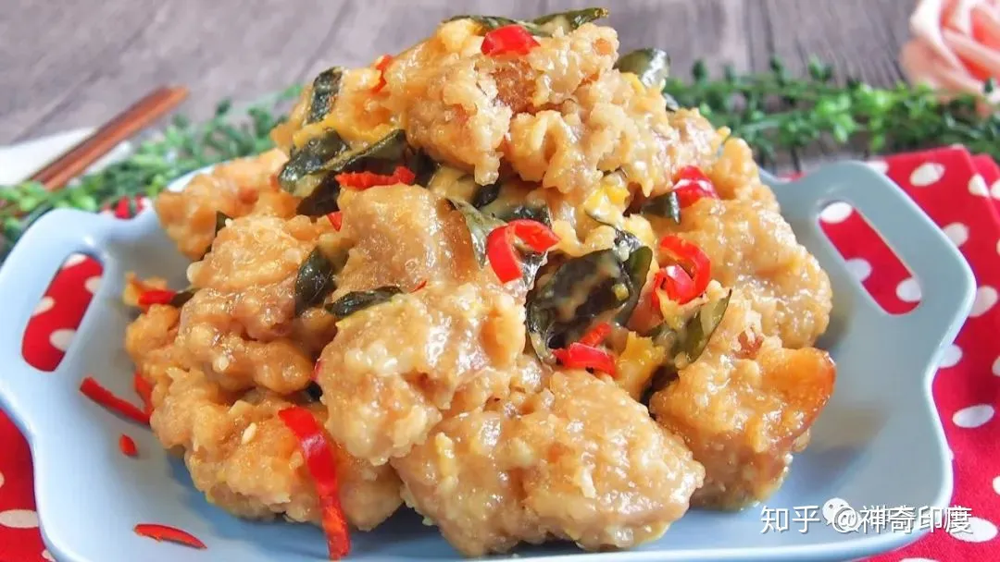

click
India Food
Biryani

Biryani is a rice dish brought to India by the Mongolians. It is made of long rice stewed with lamb, chicken, beef or vegetables, so it tastes moist. Among them, Hyderabad Boyani is the most famous, and there are also plain Boyani stews.
Palak Paneer

Spinach is mashed and topped with homemade Indian rustic cheese, which makes this dish one of the most popular curries in North India because of its non-spicy taste.
Tandoor Chicken

This is a famous North Indian courtly dish in which a whole chicken is marinated in yogurt and spices and then roasted in a tandoor oven, giving it a red color and a spicy taste. It is served with a green sauce and onions, making it very tasty.
Butter Chicken

It is also a famous North Indian dish of boneless tandoori chicken cooked in a sauce of cream, tomatoes and spices and served with tandoori biscuits, which is served in almost every restaurant.